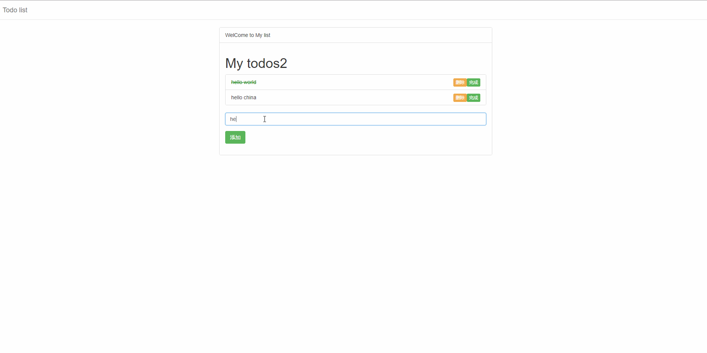

使用vuejs写一个简单的todolist
文章目录
以下是学习vue的一点demo,涉及到数据双向绑定v-model，事件触发预处理v:

代码如下：
<!DOCTYPE html>
<html lang="en">
<head>
<meta charset="UTF-8">
<title>Title</title>
<link rel="stylesheet" href="css/bootstrap.min.css">
<style>
.completed{
color: green;
text-decoration: line-through;
}
</style>
</head>
<body>
<nav class="navbar navbar-default">
<div class="container-fluid">
<div class="navbar-header">
<a class="navbar-brand" href="#">
Todo list
</a>
</div>
</div>
</nav>
<div class="container" id="app">
<div class="col-md-8 col-md-offset-2">
<div class="panel panel-default">
<div class="panel-heading">WelCome to My list</div>
<div class="panel-body">
<h1>My todos{{todoCount}}</h1>
<todo-items :todos="todos"></todo-items>
<form-items :todos="todos"></form-items>
</div>
</div>
</div>
</div>
<script src="js/vue.js"></script>
<script type="text/x-template" id="todo-items-template">
<ul class="list-group">
<li class="list-group-item" v-bind:class="{'completed':todo.completed}" v-for="(todo,index) in todos">{{todo.title}}
<button class="btn btn-success btn-xs pull-right" v-on:click="completeTodo(todo)">完成</button>
<button class="btn btn-warning btn-xs pull-right" v-on:click="deleteTodo(index)">删除</button>
</li>
</ul>
</script>
<script type="text/x-template" id="form-template">
<form v-on:submit.prevent="addTodo(newtodo)">
<div class="form-group">
<input type="text" class="form-control" v-model="newtodo.title" placeholder="添加一个任务">
</div>
<div class="form-group">
<button class="btn btn-success" type="submit">添加</button>
</div>
</form>
</script>
<script>
Vue.component('todo-items',{
template:'#todo-items-template',
props:['todos'],
methods:{
deleteTodo:function (index) {
console.log(index);
this.todos.splice(index,1);
},
completeTodo:function (todo) {
if (!todo.completed) {
todo.completed = true
} else {
alert('该任务已完成');
}
}
}
});
Vue.component('form-items',{
template:'#form-template',
props:['todos'],
data(){
return {
newtodo:{id:null,title:'',completed:false}
}
},
methods: {
addTodo: function (newTodo) {
if (newTodo.title == '') {
alert('不能为空！')
} else {
this.todos.push(newTodo);
this.newtodo = {id: null, title: '', completed: false}
}
}
}
});
new Vue({
el:'#app',
data:{
message:'Hello World',
todos:[
{id:1,title:'hello world',completed:true},
{id:2,title:'hello china',completed:false}
],
},
computed:{
todoCount:function () {
return this.todos.length;
}
},
});
</script>
</body>
</html>